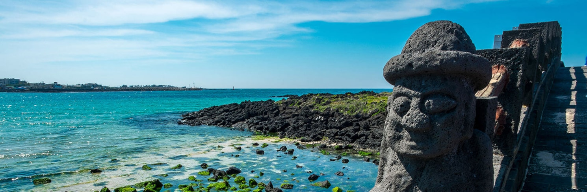
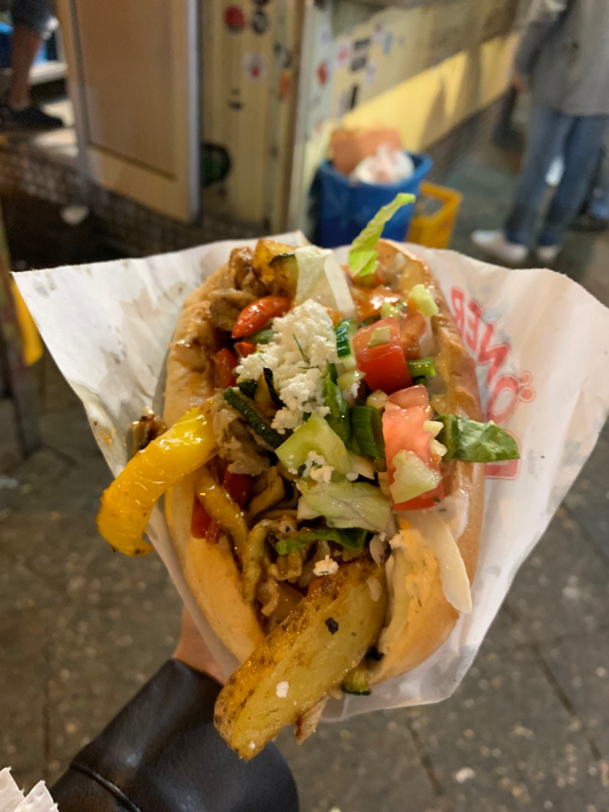

코로나 끝나면 가야 할 여행지 TOP3
1. 떠나요 셋이서 모든 걸 훌훌 버리고 : Jeju
사진이 너무 크다고 느껴진다면 맞다.
내가 가고 싶은 만큼 크게 한 거다. 절대 사진 크기 조절 못해서 이렇게 된 거 아님.
무튼 우리의 소원 제주도 가기!
내년에는 꼭 갈 수 있기를 바라면서...
2. 케밥 맛집 : Berlin
맞다. 내가 찍은 사진이다.
지금 보니깐 더 먹고 싶어진다.
저 파프리카 잊지 못해
다들 어서 자리잡아 베를린 케밥집 앞에서 만나자!
3. 네가 원하는 곳
절대 찾기 귀찮아서 그러는 거 아님
너의 의견을 반영하겠다는 의미